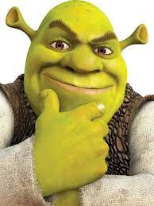

Шрек — это персонаж из анимационного фильма, созданного студией DreamWorks Animation. Он представляет собой зеленого огромного существа с приплюснутым лицом и крупными ушами. Изначально Шрек появился в одноименном фильме "Шрек" в 2001 году и быстро завоевал сердца зрителей своим уникальным чувством юмора и неожиданными поворотами сюжета. Шрек является огромным зеленым огром с необычным чувством самоиронии. Он предпочитает уединение в своем болоте, но его спокойная жизнь нарушается, когда разношерстная группа сказочных персонажей появляется у него на пороге. Чтобы вернуть свой дом, Шрек соглашается отправиться в опасное приключение. Одним из наиболее запоминающихся моментов Шрека стало его дружба с Осликом, красноречивым осёлком, который стал неотъемлемой частью команды Шрека. Фильм также известен своими сатирическими элементами, пародиями на классические сказки и поп-культурные явления. Шрек стал культовой фигурой и получил множество продолжений, а также анимационных короткометражек и специальных выпусков. Персонаж оставил непередаваемый след в мире анимации, став одним из самых любимых и узнаваемых персонажей современного кинематографа.